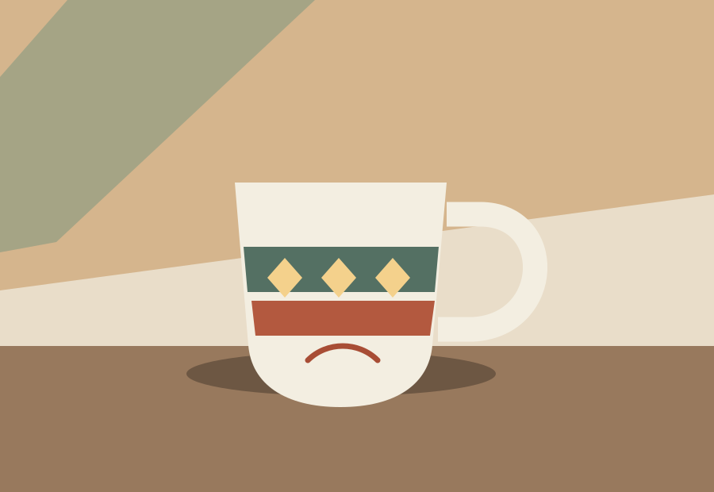
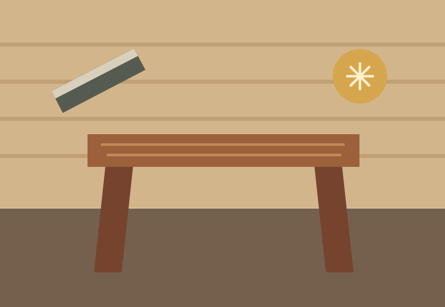

Artesanía peruana · Arequipa
Oficios que cuentan nuestra tierra
Cerámica, madera y fibras naturales trabajadas con paciencia por manos arequipeñas. Piezas honestas, hechas despacio y con respeto por los saberes locales.
Nuestros oficios
Tradición que se transforma
Alfarería, cerámica y madera son parte de un catálogo que crece con colaboración y experimentación.


Del cuaderno
Historias del taller
Pequeñas notas sobre técnicas y materiales que hacen único cada objeto.
Cuaderno del taller
La paciencia del barro
Qué ocurre entre el modelado y el primer horneado.
Leer relato